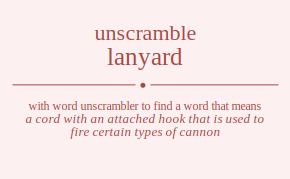

Do you wonder how many words you can made out of letters lanyard. To unscramble lanyard we can search against each letter in lanyard and find meaningful words in dictionary. You can use this word list to cheat word games. Unscramble word cheat is one of the things you can do by using our site.
The word found after unscrambling lanyard means that
a cord with an attached hook that is used to fire certain types of cannon,
a cord worn around the neck to hold a knife or whistle,
(nautical) a line used for extending or fastening rigging on ships,
.
